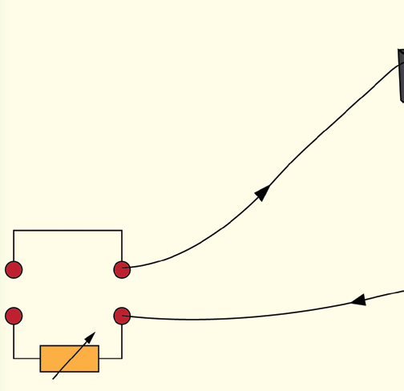
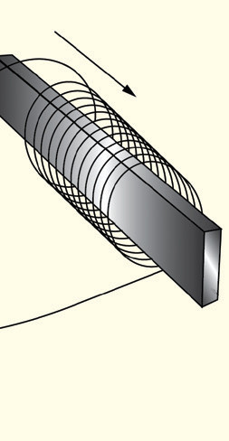

The current is switched on for a short time only because overheating can damage the coil. Moreover, the bar does not become more strongly magnetised if the current is left on for a long time. The steel bar attracts the iron filings, showing that it has been magnetised. In each of the methods mentioned, if the object is composed of ferromagnetic materials, it will remain magnetised for a while after removing the external field. However, if it is composed of paramagnetic materials, it will lose its magnetism immediately when the magnetising field is switched off.
Demagnetisation
The process involves the destruction of the dipole alignment in the magnetised material. This process can be done in the following ways:
- 1.
If a permanent magnet is heated or vibrated in the absence of an external field, the magnetisation can be destroyed.
- 2.
Randomly stroking one magnet with another can demagnetise the magnet being stroked.
- 3.
Wrapping a wire coil around the magnet and connecting the coil to a source of alternating current will eliminate the magnetic alignment.
- 4.
Repeated hammering or dropping the magnet in the absence of external magnetic field can also distort dipoles alignment.
Note; During heating, the dipoles gain thermal energy and start to vibrate randomly losing alignment. Randomly stroking makes the individual dipoles orient in different directions. Alternating current repeatedly realign the dipoles in different directions making them settle in random orientations. Hammering or dropping induce physical force into dipoles that disaligns them.

Activity 3.6
Aim:
To demagnetise a bar magnet using alternating current and a rheostat
Materials:
bar magnet, solenoid wire, rheostat, iron filings, AC power source
Procedure
- 1.
Test a bar magnet for magnetism using iron filings.
- 2.
Set up an electric circuit by connecting the solenoid wire to a low voltage AC power source, ensuring the rheostat is connected in series to control the current flow
- 3.
Adjust the rheostat to regulate the current to a safe and effective level for demagnetisation.
- 4.
Place the solenoid with its axis pointing in an east-west direction as shown in Figure 3.24.


Figure 3.24
Physics Form 2 Final.indd 106
03/04/2026 14:19